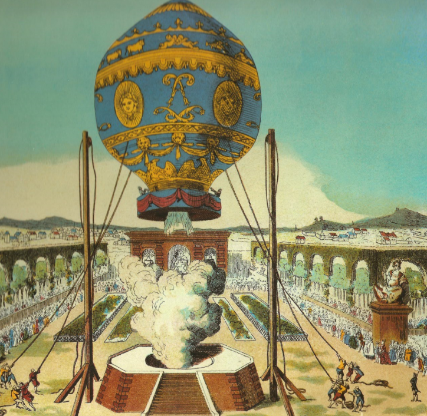
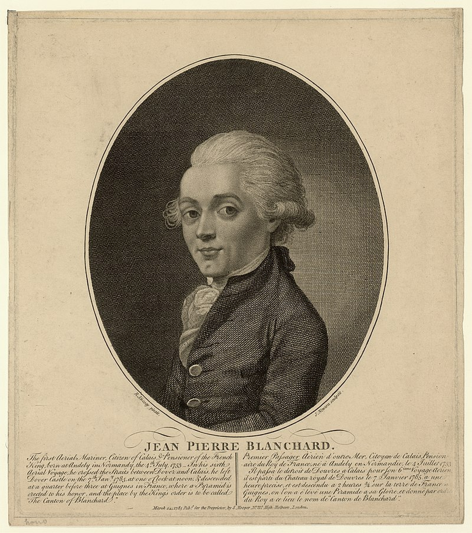
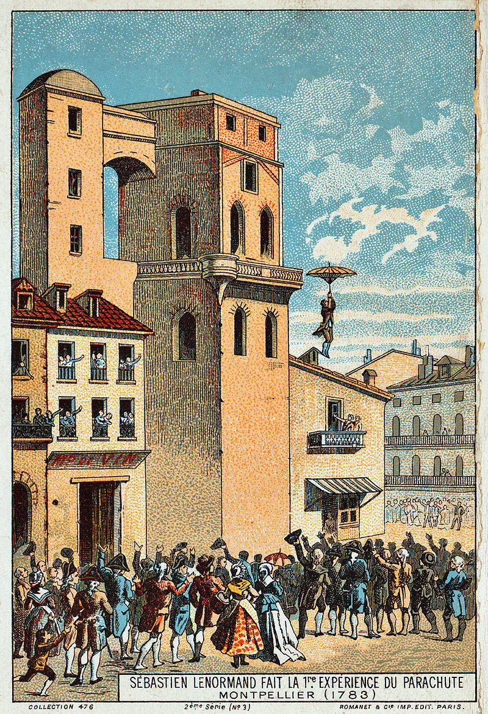
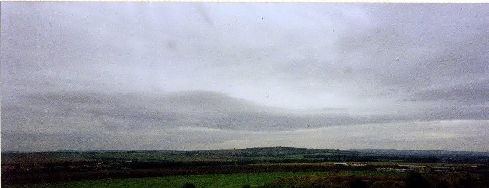
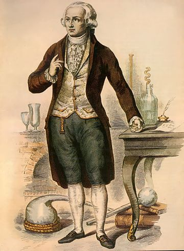
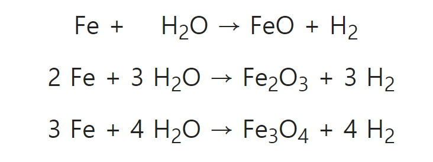

혁명의 날개 - 나폴레옹과 프랑스 공군 이야기 (1편)
게시: 2018-04-08T20:00:20+09:00
탈라베라 전투에서 빅토르의 복장을 터뜨린 주르당 원수에 대해 설명하면서, 주르당 원수의 몇 안되는 빛나는 승리 중 하나인 1794년 플뢰뤼스(Fleurus) 전투에 대해서도 언급했지요. 플뢰뤼스 전투 그 자체는 별 의미도 재미도 없는 전투입니다만, 이 전투는 군사학적으로는 매우 중요한 의미를 갖습니다. 세계 최초로 공군이 활약한 전투라는 점에서 그렇습니다. 왜 다른 나라들보다 프랑스에서 세계 최초의 공군이 탄생했을까요 ? 그 효과는 어땠을까요 ? 무엇보다, 왜 불세출의 군사 천재 나폴레옹은 이런 과학 병기를 활용하지 않았을까요 ?
계몽사상이 싹튼 나라 프랑스에서는 과학자들도 많았고 일찍부터 이런저런 과학 실험들이 많이 수행되었습니다. 열기구 및 수소 기구도 그런 활동 중 하나였습니다. 혁명 전인 1783년 이미 몽골피에 형제들(Joseph-Michel, Jacques-Étienne Montgolfier)이 뜨거운 공기를 이용한 열 기구를 만들어 테스트한 일이 있을 정도였습니다.

(몽골피에 형제의 열기구 테스트 시연 모습입니다. 그들은 제대로 된 과학자는 아니었고, 원래 제지업자였습니다. 그들은 뜨거운 공기가 주변 공기보다 가벼워서 열기구가 위로 올라간다는 원리를 처음에는 몰랐고, 그냥 불을 피울 때 나오는 연기의 힘이 기구를 들어올린다고 생각했습니다.)
하지만 휴대용 가스 버너가 없어서 철제 난로와 장작을 싣고 날아야 했던 시절, 열기구는 체공 시간과 최대 고도에 있어 제약이 심할 수 밖에 없었습니다. 결국 가벼운 공기에 의해 기구가 뜬다는 원리를 그대로 활용하여, 수소 가스를 기구에 채우는 방식이 주류를 이루게 되었습니다. 1785년 장-피에르 블랑샤르(Jean-Pierre Blanchard)가 1785년 1월 7일에 영국의 도버 캐슬(Dover Castle)에서 프랑스의 귄느(Guines)까지 2시간 30분 만에 기구를 타고 영불 해협을 건너는 기염을 토하기도 했는데, 이때 사용된 기구도 열기구가 아니라 수소 기구였습니다. 물론 뜨거운 공기와는 달리 수소 가스는 일반인들이 쉽게 만들 수 있는 것이 아니었습니다. 그리고 당시 수소를 만드는 방법은 100년도 훨씬 전인 7세기 중반에 발명된, 철에 황산을 들이붓는 것이었습니다. 황산은 비싸고 구하기 어려운 재료였으므로 수소 제조 비용은 굉장히 비쌌습니다.

(블랑샤르입니다. 그는 최초로 도버 해협 통과에 성공한 이후, 미국에서도 조지 워싱턴과 존 아담스, 토마스 제퍼슨 등 기라성 같은 인물들 앞에서 기구 비행 시범을 보였고, 기구 비행사를 위한 낙하산 연구 및 제조에도 힘을 기울였습니다. 실제로 그는 1793년 사고로 기구가 터질 때 낙하산을 써서 탈출에 성공하여, 인류 최초로 비행 사고에서 낙하산 탈출에 성공한 인물이 되기도 했습니다. 나중에 그는 나폴레옹의 공군 총책임자로 임명된 소피 아르망(Marie Madeleine-Sophie Armant)과 결혼했습니다. 불행히도 그는 1808년 헤이그에서 기구 비행 중 심장마비를 일으키며 기구에서 추락했고, 그 부상으로 인해 1년 간의 투병 끝에 사망했습니다. 결국 그 부인인 소피도 기구 사고로 목숨을 잃었습니다.)

(세계 최초의 낙하산 시범을 보이는 레노르망(Louis-Sébastien Lenormand)입니다. 이 실험은 1783년 12월, 그러니까 몽골피에 형제의 첫 비행 직후에 이루어졌습니다만, 사실 레노르망은 이 낙하산이라는 물건을 기구 비행사를 위해서 만든 것은 아니었습니다. 그는 화재가 발생한 고층 건물에서 뛰어내리기 위한 용도로 이 우산처럼 생긴 낙하산이라는 것을 만들었다고 합니다.)
그러다 1789년 프랑스 대혁명이 일어났습니다. 혁명 지도부는 중산층 출신의 지식인들로 이루어져 있었고, 특히 과학에 관심이 많았습니다. 프랑스 대혁명은 부르봉 왕가로 대표되는 특권 귀족층에 대한 반발이기도 했지만, 프랑스를 천년간 지배해온 카톨릭 사제 계급에 대한 반발이기도 했거든요. 덕분에 많은 카톨릭 성당들이 마굿간으로 변경되는 등 수난을 당하기도 했지요. 혁명 지도부는 그런 종교적 순종과 대립하는 과학적 이성을 숭배했습니다. 그리고 무엇보다 혁명 지도부에겐 당장 총칼로 싸워야 하는 적들이 매우 많았습니다. 영국, 프로이센, 오스트리아, 스페인, 사르데냐 등등 프랑스 이외의 모든 유럽 국가들이 사실상 혁명 지도부의 적이었습니다.
프랑스가 아무리 큰 나라라고 해도 유럽 전체와 맞서 싸우기에는 역부족이었습니다. 앙시앵 레짐(Ancien Regime, 구체제)을 깨뜨리고 탄생한 혁명군에게는 과학의 힘으로 만들어진 신무기가 필요했습니다. 그런 와중에 등장한 것이 바로 수소 기구였습니다.
군사 작전에 있어 정보의 중요성은 고대 로마 시대부터 현대전까지 아무리 강조해도 지나치지 않습니다. 특히 유럽 대륙처럼 대부분의 전투가 비교적 평탄한 곳에서 치루어진 지역에서는 별로 고지같지도 않은 언덕 하나를 차지하는 측이 절대적인 우위를 점할 수 있었습니다. 가령 아우스테를리츠에서 나폴레옹이 전략적으로 러시아-오스트리아 연합군에게 양보한 프라첸(Pratzen) 고지의 높이는 고작 12m였습니다. 고지를 차지하는 것이 중요한 이유 중 하나는 바로 적진 관측이었습니다. 가령 1809년 바그람 전투에 출정하기 위해 쇤브룬 궁전을 나서던 나폴레옹의 짐 중에는 쇤브룬 궁전 정원사가 사용하던 사다리도 있었습니다. 2m도 안 되는 높이였지만, 그런 정원사용 사다리 위에서 바라보는 적진 현황이 전체 작전 지휘에 엄청난 차이를 낼 수 있었습니다. 웰링턴이 즐겨 쓰던 언덕 후사면을 이용한 수비 전술의 핵심도 병력을 능선 너머에 은폐시켜 적의 관측으로부터 아군의 현황을 숨기는 것에 있었습니다.

(아우스테를리츠 평원을 제압하는 전략적 고지, 프라첸 고지의 모습입니다. 이렇게 보면 전혀 고지처럼 보이지 않는, 12m짜리 높이의 언덕에 불과합니다.)
이런 상황에서 저 하늘 높은 곳에서 유유히 떠있는 기구에 망원경을 든 관측병이 올라타 있다면 모든 것이 바뀔 수 있었습니다. 과학 혁신을 중시하던 혁명 정부의 성향에 고무된 프랑스 전국의 과학자와 발명가들은 기구를 이용하는 작전에 대한 온갖 제안을 쏟아냈습니다. 그러나 대개 그렇듯이 그런 제안들 중 실질적인 것은 많지 않았고 실패도 있었습니다. 무엇보다, 현실적인 기구 활용을 위해서는 수소를 저비용으로 대량 생산할 수 있어야 했습니다.

(군사 기술의 극적인 발전에는 역시 미친 과학자가 필요합니다. 라브와지에는 존경받아 마땅한 화학자로서 미친 과학자와는 거리가 좀 먼 분이긴 합니다만, '내가 단두대에서 목이 잘리고 난 뒤 눈을 깜빡거릴테니 얼마나 오래 깜빡거리는지 관찰해달라'고 부탁한 것을 보면 적어도 과학에 약간 정신이 나간분은 맞는 것 같긴 합니다. 일설에 따르면 라브와지에는 목이 잘리고 난 뒤에도 30초 정도 열심히 눈을 깜빡거리셨다고 합니다.)
그런데 알고 보면 프랑스 공군 창설에 핵심이 되는 이 수소 대량 생산 기술은 이미 1784년에 발명된 바 있었습니다. 그것도 바로 프랑스 혁명 정부에 적극 참여하고 있을 뿐만 아니라, 수소(hydrogene - 물의 생성자라는 뜻)라는 이름을 처음 붙인 프랑스 과학자에 의해서요. 바로 저명한 화학자 라브와지에(Antoine-Laurent de Lavoisier)였지요. 그는 수소 대량 생산보다는 당시 과학계의 주류를 이루던 플로지스톤(phlogiston) 이론을 반박하기 위해서 이 방법을 고안했습니다. 당시 과학자들은 연소란 석탄이나 기름, 나무 등 인화 물질에 풍부하게 들어있는 플로지스톤이라는 물질이 일으키는 현상이라고 믿고 있었습니다. 라브와지에는 이 이론을 깨기 위해 '플로지스톤에 대한 고찰'(Réflexions sur le phlogistique)이라는 책까지 썼으나, 여전히 많은 과학자들은 플로지스톤이라는 물질을 믿고 있었습니다. 라브와지에는 수학자 므니에(Jean Baptiste Meusnier)의 도움을 받아 이런 테스트를 수행했습니다. 즉, 섭씨 600도로 달군 뜨거운 총열 속으로 수증기를 불어넣었더니, 다음과 같은 반응식에 의해 총구의 다른 끝으로 가연성 기체인 수소가 생성된 것입니다.

(라브와지에가 수행한 테스트에서 수소가 발생하는 이유는 총열의 주성분인 철과 수증기 속의 산소가 뜨거운 열 속에서 결합하며 수소가 남기 때문입니다. 라브와지에는 자랑스럽게 이 테스트 결과를 발표했으나 대부분의 과학자들은 여전히 플로지스톤 이론을 믿었다고 합니다.)
그러다 1793년 10월, 비싼 황산을 쓰지 않고 이 잠깐 잊혀졌던 라브와지에-므니에 방식으로 수소를 대량 생산하는 테스트가 성공리에 시연되면서 관측용 수소 기구에 대한 구상이 급진전되었습니다. 정작 라브와지에는 이 테스트에는 참여하지 않았을 뿐만 아니라, 혁명 정부에서 그가 책임을 지고 있던 세금 징수 및 담배 판매에서의 부정 행위에 대해 유죄 판결을 받고 그 다음해인 1794년 단두대에서 처형되었습니다.
아무튼 이 수소 생산 테스트 직후에 혁명 정부의 공안위원회는 화학자인 쿠텔(Jean-Marie-Joseph Coutelle)과 그의 조수이자 엔지니어인 로몽(Nicolas Lhomond)을 벨기에 방면을 담당하던 북부군(Armée du Nord)에 파견했습니다. 이 두 사람은 맨 몸으로 간 것은 아니었습니다. 이들에겐 공안위원회가 지급한 5만 리브르(현재 가치로 약 5억8천 만원)의 현금이 있었습니다. 즉 현지에서 필요한 기자재를 구입한 뒤 기구를 제작하여 북부군의 작전을 지원하라는 것이었지요. 하지만 이들을 맞이한 북부군 사령관의 반응은 신통치 않았습니다. 이 사령관이 바로 주르당(Jean-Baptiste Jourdan) 장군이었습니다. 주르당은 기구를 이용하여 적진을 공중에서 관측해주겠다는 이 두 명의 민간인을 조롱과 비웃음으로 대했습니다. 과학자들을 대하는 군인들의 태도가 어떨 것인지 예상했던 국방부 장관이자 빼어난 수학자였던 카르노(Lazare Carnot)가 그런 사태를 방지하기 위해 함께 보낸 소개장에는 '시민 쿠텔은 결코 협잡꾼이 아닙니다'(Citoyen Coutelle n'est pas un charlatan)라는 다소 옹색하면서도 노골적인 표현이 쓰여있었습니다. 그러나 주르당은 이들을 그야말로 협잡꾼 취급을 하며, 이런 말과 함께 그들을 잘 타일러 파리로 돌려보냈습니다.
"오스트리아의 공격이 임박했으니, 풍선이 아니라 보병 대대가 필요합니다."
(Une attaque autrichienne est imminente, et qu'un bataillon est nécessaire, pas un ballon)
즉, 불어로 대대를 뜻하는 바따용과 풍선을 뜻하는 발롱이라는 단어의 라임(rhyme)이 비슷한 것을 이용한 조롱이었지요. 엄격히 말해서 ~용과 ~옹은 라임이 맞지 않는다고 할 수 있지요. 과연 프랑스 공군 창설은 이렇게 주르당의 같잖은 라임과 함께 사라질 운명이었을까요 ?
Source : https://en.wikipedia.org/wiki/L%27Intr%C3%A9pide
https://en.wikipedia.org/wiki/Observation_balloon
https://en.wikipedia.org/wiki/Battle_of_Fleurus_(1794)
https://en.wikipedia.org/wiki/Hot_air_balloon
https://en.wikipedia.org/wiki/History_of_military_ballooning
https://vistaballoon.com/blog/2014/10/the-history-of-ballooning/
http://www.balloonfiesta.com/gas-balloons/gas-vs-hot-air
http://www.balloonfiesta.com/gas-balloons/history-2
http://www.pbs.org/wgbh/nova/space/short-history-of-ballooning.html
https://web.archive.org/web/20100528025354/http://www.centennialofflight.gov/essay/Lighter_than_air/Napoleon%27s_wars/LTA3.htm
https://en.wikipedia.org/wiki/Nicolas-Jacques_Cont%C3%A9
https://en.wikipedia.org/wiki/Jean-Pierre_Blanchard
https://en.wikipedia.org/wiki/Louis-S%C3%A9bastien_Lenormand
https://en.wikisource.org/wiki/1911_Encyclop%C3%A6dia_Britannica/Cont%C3%A9,_Nicolas_Jacques
https://fr.wikipedia.org/wiki/Compagnie_d%27a%C3%A9rostiers
https://en.wikipedia.org/wiki/Ch%C3%A2teau_de_Meudon
http://www.strangehistory.net/2011/02/06/lavoisier-blinks/